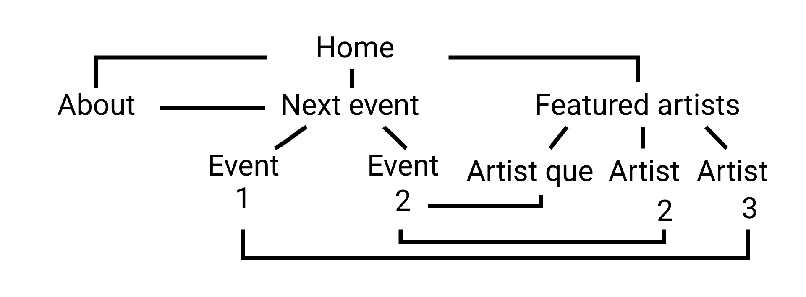

DOCUMENTAZIONE
- Abstract: Rapworld è il primo sito in cui si può assistere a live di artisti rap e alle loro battle di freestyle. E’ un modo per conoscere talenti che si farebbe fatica a raggiungere su Spotify o YouTube, ma anche per godersi live di un genere musicale molto sottovalutato in alcune città.
- Benchmarking.
- Obiettivi: fornire ad artisti emergenti uno spazio in cui farsi conoscere, uscendo dalla propria provincia e accedendo al panorama nazionale più velocemente. Per l’utente medio, una possibilità per ascoltare musica live senza dover spostarsi di centinaia di chilometri.
- Target: Giovane tra i 14 e i 25 anni, abituati a partecipare a incontri ed eventi online. Sono appassionati (o producono) musica rap, vivono in città provinciali in cui i live di questo genere non sono frequenti.
- Competitor: Non esiste in effetti una piattaforma di questo tipo. Ci sono tuttavia, alcune alternative, in particolari canali YT che caricano live di eventi.
- DOJO events: Canale italiano che organizza battle di freestyle a Torino e li ricarica su YT
- XXL Magazine: Magazine americano che curava un contest tra i migliori rapper emergenti USA (poi destinati puntualmente a sfondare nel panorama internazionale). Da qualche anno non si svolge più, ma continuano a caricare pezzi di artisti ospiti nella loro redazione.
- Rolling Loud: evento principale nel panorama rap. Festival che si svolge almeno 3 volte all’ anno in location diverse. Carica le performance su YT, con molto successo.
- Spotify: applicazione che permette di scoprire nuova musica con una certa facilità.
- Struttura e Layout
- Rappresentazione ad albero:

- Wireframe:

- Look
- Font: Roboto 400 per i paragrafi e Lora 700 per i titoli. Ho scelto questa coppia perché elegante, di classe. Il rap è stato spesso racconto di crimini messo in versi. E’ stato forma che abbelliva le azioni più becere. Impossibile quindi prescindere da essa.
- Scelta dei colori: Stesso discorso. Il rap è in molti casi sublimazione di violenza. Scelgo il nero in riferimento a questo, e anche per celebrare la comunità afroamericana da cui tutto è nato.
- Altre scelte grafiche: il logo è costituito da una R e il nome della piattaforma. Questo perché alcuni magazine del settore hanno questo come logo. Semplice, rimanda direttamente al nome del sito.
- Linguaggi e strumenti
- Linguaggi: HTML, CSS
- Strumenti:
- Visual studio code per la scrittura del codice.
- Google Fonts per l’utilizzo dei font.
- Fontawesome e Favicon per le icone.
- YouTube per spunti.
- Github per la pubblicazione.
- Instagram per collegare una pagina social.
- Google Analytics per tracciare i risultati.
- Uizard per produrre il wireframe
COMMUNICATION STRATEGY
- Background: Nonostante le possibilità di ascolto per gli appassionati del genere, manca in alcuni casi la possibilità di vivere esperienze in diretta. Questo perché i concerti di artisti nazionali avvengono in poche città, e questo richiede un’organizzazione non sempre possibile. Online si trovano invece registrazioni di diversi eventi, che hanno lo svantaggio, appunto, di essersi già concluse. Nel primo caso gli eventi sono pochi e scomodi, nel secondo non si possono definire tali in quanto già avvenuti. Un caso eccezionale è stato quello di Travis Scott, che si è esibito in diretta su Fortnite (un noto videogioco): nonostante abbia riscosso un grandissimo successo, non si sono mai tenute repliche nel panorama rap (e in generale gli artisti che hanno fatto qualcosa di simile si contano sulle dita di una mano). Lascio il link al video per eventuale curiosità: https://www.youtube.com/watch?v=wYeFAlVC8qU.
- Obiettivi comunicativi e promozione: Puntiamo in questa fase iniziale all’awareness: considerati i fondi piuttosto limitati e la facilità di diffusione dei contenuti sui social, vorremmo puntare sul content e viral marketing. Essenzialmente, vorremmo creare contenuti che gli utenti possano condividere. Un’altra possibilità è l’utilizzo di influencer marketing, dove per influencer intendo artisti emergenti con almeno 2'000 followers sui principali social che possano annunciare la loro partecipazione ai live di Rapwolrd. Consideriamo obiettivi:
- 20 like su almeno un post Instagram
- 50 visite al sito web
- Condivisione nelle storie Instagram da parte di almeno un utente
- Target audience: Ho individuato due principali buyer personas:
- L’ascoltatore che apprezza il genere, ha vissuto la digitalizzazione post-pandemia e usa con piacere i nuovi strumenti a disposizione. Preferibilmente di una città medio-piccola, dove gli eventi rap, purtroppo, scarseggiano. Principalmente di genere maschile e di età compresa tra i 14 e i 30 anni.
- L’artista emergente. Ha poco da perdere nella lunga strada che porta al successo: per questo prova diverse opzioni per raggiungere nuovo pubblico. Ha molti amici che vorrebbero sentirlo live ma che, per un motivo o per l’altro, non si sono mai fatti vedere. Spera che, stavolta, non abbiano più scuse e capiscano quanto spacchi. Principalmente di genere maschile e di età compresa tra i 14 e i 30 anni.